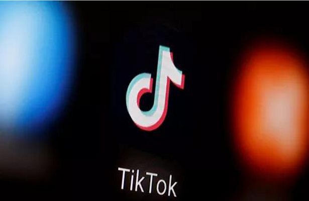

Mistério da Justiça determina que TikTok retire conteúdos impróprios para menores de idade
24/06/2022 12h25 - Atualizado 10/06/2022 12h25
A Secretaria Nacional do Consumidor (Senacon), que é ligada ao Ministério da Justiça e Segurança Pública, determinou que o aplicativo TikTok suspenda a exibição de conteúdos impróprios para menores de 18 anos no Brasil.
O despacho assinado por Laura Postal Tirelli, da Senacon, foi publicado no Diário Oficial da União nesta sexta-feira (24). Após ser notificada, a rede social tem 72 horas para remover os conteúdos sob pena de multa diária no valor de R$ 1 mil.
Em nota, o TikTok informou que ainda não foi notificado oficialmente da decisão, mas ressalta que a plataforma remove conteúdos em desacordo com as diretrizes da comunidade e que também não permite menores de 13 anos no aplicativo (veja posicionamento completo ao fim da reportagem).
Medidas foram determinadas pela Senacon:
- Na modalidade de acesso irrestrito, que é quando o usuário consegue acessar o app mesmo sem ter conta no aplicativo, deve ser feita a suspensão integral da veiculação de materiais impróprios para menores de 18 anos, envolvendo, por exemplo — mas não somente — , uso de drogas, sexualização, jogos de azar e violência.
- Na modalidade de acesso restrito, que é quando é necessário fazer o login da conta para ter o conteúdo, a suspensão integral da veiculação de conteúdos impróprios para menores de 18 anos deve ser feita até que o sistema de segurança da plataforma, que impede o cadastro de menores de 13 anos de idade e limita o acesso a todo o conteúdo por menores de 16 anos, seja aperfeiçoado "de modo que a idade dos usuários seja verificada de maneira eficaz pela representada”, diz o despacho.
Outros órgãos
A Senacon também determinou que o documento seja enviado ao Ministério Público Federal de São Paulo (MPF-SP) para conhecimento e adoção das providências cabíveis.
“Para que forneça informações atualizadas sobre o andamento do procedimento aberto em desfavor da ora representada [TikTok], no âmbito da sua competência.
O despacho também será enviado para o Ministério da Mulher, da Família e dos Direitos Humanos, além da Autoridade Nacional de Proteção de Dados (ANPD).
Em nota, o TikTok ressaltou que tem medidas para combater conteúdos impróprios para menores de 18 anos.
“A segurança da comunidade do TikTok é nossa maior prioridade e temos políticas, processos e tecnologias robustas para ajudar a proteger todos os usuários, principalmente os nossos membros mais jovens. Para garantir um ambiente seguro para todos, nossas Diretrizes da Comunidade deixam claro os conteúdos que não são permitidos em nossa plataforma, como por exemplo violência e conteúdos explícitos, que serão removidos assim que identificados. Fazemos parceria com especialistas e organizações de segurança para apoiar este trabalho e dialogamos com líderes do setor para promover medidas de segurança dos jovens no TikTok, entre elas definir contas com menos de 16 anos como privadas por padrão e permitir que os pais vinculem suas contas às de seus filhos por meio da Sincronização Familiar".
Vídeos excluídos
O Brasil foi o terceiro país que mais teve vídeos removidos por violações dos termos de comunidade do TikTok em 2021. O país ficou atrás apenas de Estados Unidos e Paquistão, segundo os números divulgados nos relatórios oficiais da rede social.
Entre janeiro e dezembro do ano passado, foram excluídos mais de 23,4 milhões de conteúdos brasileiros, de acordo com dados consolidados pelo g1 a partir dos documentos da rede social.
Os cinco países que mais tiveram conteúdo excluído em 2021 foram:
- Estados Unidos: 46,8 milhões
- Paquistão: 28,9 milhões
- Brasil: 23,4 milhões
- Rússia: 21,3 milhões
- Indonésia: 14,1 milhões